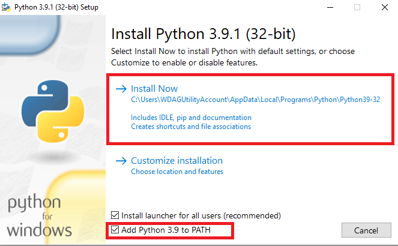
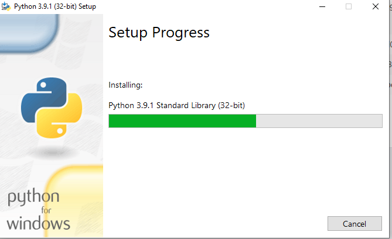
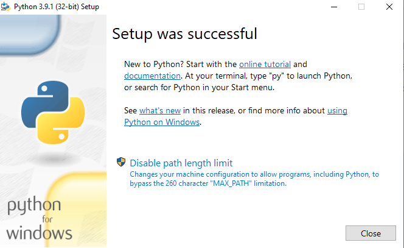
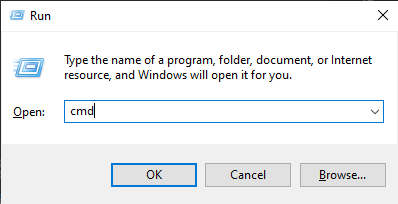
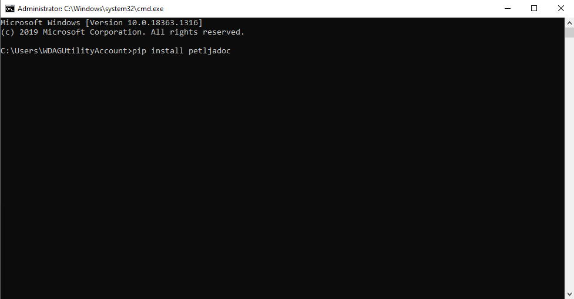
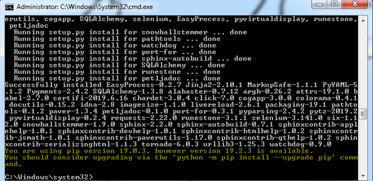
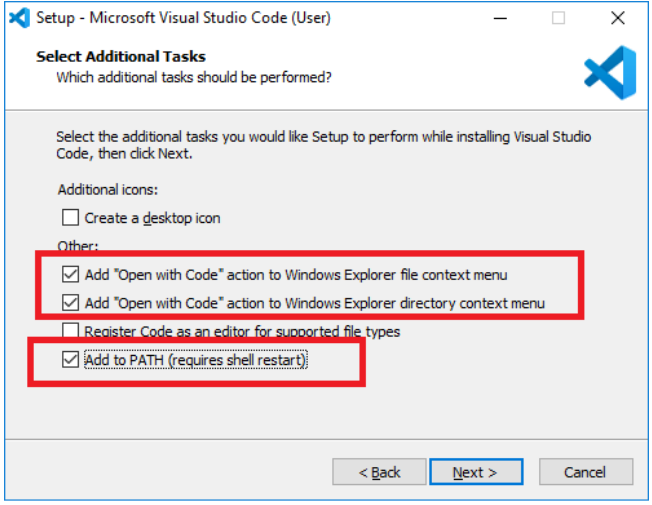
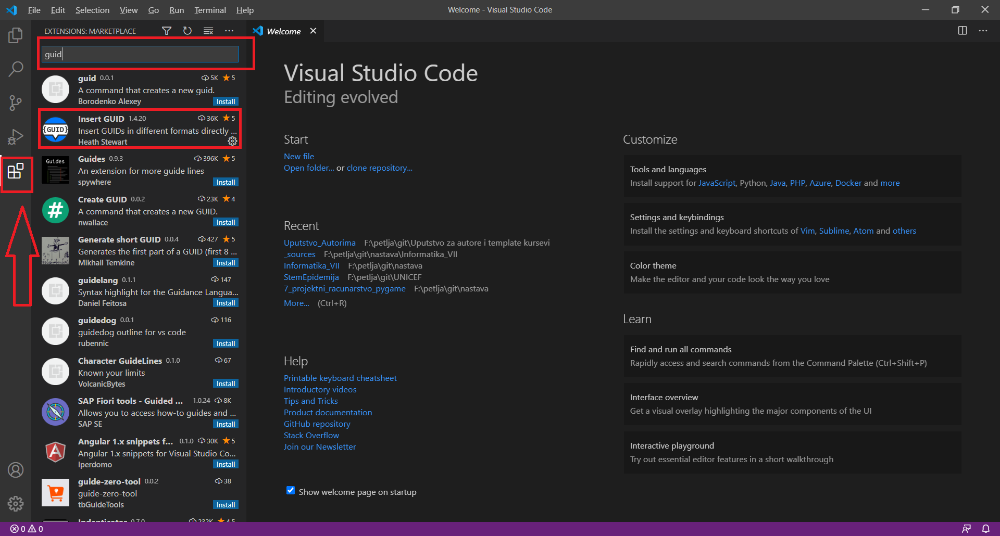

<!DOCTYPE html>
<html xmlns="http://www.w3.org/1999/xhtml" lang=""></html>
  <head>
    <meta charset="utf-8" />
    <meta name="viewport" content="width=device-width, initial-scale=1.0" />
<title>Инсталација потребних алата &#8212; Uputstvo Autorima</title>
    <link rel="stylesheet" href="_static/pygments.css" type="text/css" />
    <link rel="stylesheet" href="_static/basic.css" type="text/css" />
    <link rel="stylesheet" type="text/css" href="_static/activecode.css" />
    <link rel="stylesheet" type="text/css" href="_static/codemirror.css" />
    <link rel="stylesheet" type="text/css" href="_static/clickable.css" />
    <link rel="stylesheet" type="text/css" href="_static/pytutor.css" />
    <link rel="stylesheet" type="text/css" href="_static/modal-basic.css" />
    <link rel="stylesheet" type="text/css" href="_static/datafile.css" />
    <link rel="stylesheet" type="text/css" href="_static/dragndrop.css" />
    <link rel="stylesheet" type="text/css" href="_static/fitb.css" />
    <link rel="stylesheet" type="text/css" href="_static/matrixeq.css" />
    <link rel="stylesheet" type="text/css" href="_static/parsons.css" />
    <link rel="stylesheet" type="text/css" href="_static/lib/prettify.css" />
    <link rel="stylesheet" type="text/css" href="_static/poll.css" />
    <link rel="stylesheet" type="text/css" href="_static/showEval.css" />
    <link rel="stylesheet" type="text/css" href="_static/tabbedstuff.css" />
    <link rel="stylesheet" type="text/css" href="https://stackpath.bootstrapcdn.com/bootstrap/4.2.1/css/bootstrap.min.css" />
    <link rel="stylesheet" type="text/css" href="_static/video.css" />
    <link rel="stylesheet" type="text/css" href="_static/webgldemo.css" />
    <link rel="stylesheet" type="text/css" href="_static/webglinteractive.css" />
    <link rel="stylesheet" type="text/css" href="_static/karel.css" />
    <link rel="stylesheet" type="text/css" href="_static/notes.css" />
    <link rel="stylesheet" type="text/css" href="_static/simanim.css" />
    <link rel="stylesheet" type="text/css" href="_static/pycode.css" />
    <link rel="stylesheet" type="text/css" href="_static/p5js.css" />
    <link rel="stylesheet" type="text/css" href="_static/gallery.css" />
    <link rel="stylesheet" type="text/css" href="https://stackpath.bootstrapcdn.com/bootstrap/4.2.1/css/bootstrap.min.css" />
    <link rel="stylesheet" type="text/css" href="_static/video.css" />
    <link rel="stylesheet" href="_static/user-highlights.css" type="text/css" />
    <link rel="stylesheet" href="https://use.fontawesome.com/releases/v5.1.1/css/all.css" type="text/css" />
    <link rel="stylesheet" href="_static/bootstrap-4.0.0-dist/css/bootstrap.min.css" type="text/css" />
    <link rel="stylesheet" href="_static/flatly.min.css" type="text/css" />
    <link rel="stylesheet" href="_static/petlja-runestone.css" type="text/css" />
    <script id="documentation_options" data-url_root="./" src="_static/documentation_options.js"></script>
    <script type="text/javascript" src="_static/runestonebase.js"></script>
    <script type="text/javascript" src="_static/jquery.js"></script>
    <script type="text/javascript" src="_static/underscore.js"></script>
    <script type="text/javascript" src="_static/doctools.js"></script>
    <script type="text/javascript" src="_static/language_data.js"></script>
    <script type="text/javascript" src="_static/jquery.highlight.js"></script>
    <script type="text/javascript" src="_static/bookfuncs.js"></script>
    <script type="text/javascript" src="_static/codemirror.js"></script>
    <script type="text/javascript" src="_static/xml.js"></script>
    <script type="text/javascript" src="_static/css.js"></script>
    <script type="text/javascript" src="_static/python.js"></script>
    <script type="text/javascript" src="_static/htmlmixed.js"></script>
    <script type="text/javascript" src="_static/javascript.js"></script>
    <script type="text/javascript" src="_static/jquery_i18n/CLDRPluralRuleParser.js"></script>
    <script type="text/javascript" src="_static/jquery_i18n/jquery.i18n.js"></script>
    <script type="text/javascript" src="_static/jquery_i18n/jquery.i18n.messagestore.js"></script>
    <script type="text/javascript" src="_static/jquery_i18n/jquery.i18n.fallbacks.js"></script>
    <script type="text/javascript" src="_static/jquery_i18n/jquery.i18n.language.js"></script>
    <script type="text/javascript" src="_static/jquery_i18n/jquery.i18n.parser.js"></script>
    <script type="text/javascript" src="_static/jquery_i18n/jquery.i18n.emitter.js"></script>
    <script type="text/javascript" src="_static/jquery_i18n/jquery.i18n.emitter.bidi.js"></script>
    <script type="text/javascript" src="_static/activecode-i18n.en.js"></script>
    <script type="text/javascript" src="_static/skulpt.min.js"></script>
    <script type="text/javascript" src="_static/skulpt-stdlib.js"></script>
    <script type="text/javascript" src="_static/activecode.js"></script>
    <script type="text/javascript" src="_static/clike.js"></script>
    <script type="text/javascript" src="_static/timed_activecode.js"></script>
    <script type="text/javascript" src="_static/animationbase.js"></script>
    <script type="text/javascript" src="_static/mchoice.js"></script>
    <script type="text/javascript" src="_static/timedmc.js"></script>
    <script type="text/javascript" src="_static/timed.js"></script>
    <script type="text/javascript" src="_static/mchoice-i18n.en.js"></script>
    <script type="text/javascript" src="_static/clickable.js"></script>
    <script type="text/javascript" src="_static/timedclickable.js"></script>
    <script type="text/javascript" src="_static/d3.v2.min.js"></script>
    <script type="text/javascript" src="_static/jquery.ba-bbq.min.js"></script>
    <script type="text/javascript" src="_static/jquery.jsPlumb-1.3.10-all-min.js"></script>
    <script type="text/javascript" src="_static/pytutor.js"></script>
    <script type="text/javascript" src="_static/codelens.js"></script>
    <script type="text/javascript" src="_static/datafile.js"></script>
    <script type="text/javascript" src="_static/dragndrop.js"></script>
    <script type="text/javascript" src="_static/timeddnd.js"></script>
    <script type="text/javascript" src="_static/dragndrop-i18n.en.js"></script>
    <script type="text/javascript" src="_static/fitb.js"></script>
    <script type="text/javascript" src="_static/timedfitb.js"></script>
    <script type="text/javascript" src="_static/fitb-i18n.en.js"></script>
    <script type="text/javascript" src="_static/matrixeq.js"></script>
    <script type="text/javascript" src="_static/lib/prettify.js"></script>
    <script type="text/javascript" src="_static/lib/hammer.min.js"></script>
    <script type="text/javascript" src="_static/parsons.js"></script>
    <script type="text/javascript" src="_static/parsons-i18n.en.js"></script>
    <script type="text/javascript" src="_static/timedparsons.js"></script>
    <script type="text/javascript" src="_static/poll.js"></script>
    <script type="text/javascript" src="_static/reveal.js"></script>
    <script type="text/javascript" src="_static/shortanswer.js"></script>
    <script type="text/javascript" src="_static/timed_shortanswer.js"></script>
    <script type="text/javascript" src="_static/showEval.js"></script>
    <script type="text/javascript" src="_static/tabbedstuff.js"></script>
    <script type="text/javascript" src="_static/runestonevideo.js"></script>
    <script type="text/javascript" src="_static/webglinteractive.js"></script>
    <script type="text/javascript" src="_static/FileSaver.min.js"></script>
    <script type="text/javascript" src="_static/Blob.js"></script>
    <script type="text/javascript" src="_static/karelCorner.js"></script>
    <script type="text/javascript" src="_static/karelRobot.js"></script>
    <script type="text/javascript" src="_static/karelWorld.js"></script>
    <script type="text/javascript" src="_static/karelRobotDrawer.js"></script>
    <script type="text/javascript" src="_static/karelUI.js"></script>
    <script type="text/javascript" src="_static/karel.js"></script>
    <script type="text/javascript" src="_static/karel-i18n.en.js"></script>
    <script type="text/javascript" src="_static/notes.js"></script>
    <script type="text/javascript" src="_static/pygamelib-init.js"></script>
    <script type="text/javascript" src="_static/blockly/blockly_compressed.js"></script>
    <script type="text/javascript" src="_static/blockly/blocks_compressed.js"></script>
    <script type="text/javascript" src="_static/blockly/python_compressed.js"></script>
    <script type="text/javascript" src="_static/blockly/msg-sr.js"></script>
    <script type="text/javascript" src="_static/blockpy/utilities.js"></script>
    <script type="text/javascript" src="_static/blockpy/python_errors.js"></script>
    <script type="text/javascript" src="_static/blockpy/ast_node_visitor.js"></script>
    <script type="text/javascript" src="_static/blockpy/abstract_interpreter.js"></script>
    <script type="text/javascript" src="_static/blockpy/pytifa.js"></script>
    <script type="text/javascript" src="_static/blockpy/abstract_interpreter_definitions.js"></script>
    <script type="text/javascript" src="_static/blockpy/python_to_blockly.js"></script>
    <script type="text/javascript" src="_static/blockpy/imported.js"></script>
    <script type="text/javascript" src="_static/blockpy/blocks/class.js"></script>
    <script type="text/javascript" src="_static/blockpy/blocks/comment.js"></script>
    <script type="text/javascript" src="_static/blockpy/blocks/comprehensions.js"></script>
    <script type="text/javascript" src="_static/blockpy/blocks/dict.js"></script>
    <script type="text/javascript" src="_static/blockpy/blocks/if.js"></script>
    <script type="text/javascript" src="_static/blockpy/blocks/io.js"></script>
    <script type="text/javascript" src="_static/blockpy/blocks/lists.js"></script>
    <script type="text/javascript" src="_static/blockpy/blocks/sets.js"></script>
    <script type="text/javascript" src="_static/blockpy/blocks/loops.js"></script>
    <script type="text/javascript" src="_static/blockpy/blocks/parking.js"></script>
    <script type="text/javascript" src="_static/blockpy/blocks/tuple.js"></script>
    <script type="text/javascript" src="_static/blockpy/blocks/turtles.js"></script>
    <script type="text/javascript" src="_static/blockpy/blocks/text.js"></script>
    <script type="text/javascript" src="_static/blockpy-modal.js"></script>
    <script type="text/javascript" src="_static/simanim.js"></script>
    <script type="text/javascript" src="https://cdn.jsdelivr.net/pyodide/v0.16.1/full/pyodide.js"></script>
    <script type="text/javascript" src="_static/pycode.js"></script>
    <script type="text/javascript" src="//toolness.github.io/p5.js-widget/p5-widget.js"></script>
    <script type="text/javascript" src="_static/p5js.js"></script>
    <script type="text/javascript" src="_static/gallery.js"></script>
    <script type="text/javascript" src="_static/petljavideo.js"></script>
    <script type="text/javascript" src="_static/mchoice-i18n.sr-Cyrl.js"></script>
    <script type="text/javascript" src="_static/mchoice-i18n.sr.js"></script>
    <script type="text/javascript" src="_static/mchoice-i18n.sr-Latn.js"></script>
    <script type="text/javascript" src="_static/dragndrop-i18n.sr-Cyrl.js"></script>
    <script type="text/javascript" src="_static/dragndrop-i18n.sr.js"></script>
    <script type="text/javascript" src="_static/dragndrop-i18n.sr-Latn.js"></script>
    <script type="text/javascript" src="_static/fitb-i18n.sr-Cyrl.js"></script>
    <script type="text/javascript" src="_static/fitb-i18n.sr.js"></script>
    <script type="text/javascript" src="_static/fitb-i18n.sr-Latn.js"></script>
    <script type="text/javascript" src="_static/parsons-i18n.sr-Cyrl.js"></script>
    <script type="text/javascript" src="_static/parsons-i18n.sr.js"></script>
    <script type="text/javascript" src="_static/parsons-i18n.sr-Latn.js"></script>
    <script type="text/javascript" src="_static/activecode-i18n.sr-Cyrl.js"></script>
    <script type="text/javascript" src="_static/activecode-i18n.sr.js"></script>
    <script type="text/javascript" src="_static/activecode-i18n.sr-Latn.js"></script>
    <script type="text/javascript" src="_static/jquery-ui-1.10.3.custom.min.js"></script>
    <script type="text/javascript" src="_static/jquery-fix.js"></script>
    <script type="text/javascript" src="_static/bootstrap-4.0.0-dist/js/bootstrap.min.js"></script>
    <script type="text/javascript" src="_static/bootstrap-4.0.0-dist/js/bootstrap.bundle.min.js"></script>
    <script type="text/javascript" src="_static/bootstrap-sphinx.js"></script>
    <script type="text/javascript" src="_static/waypoints.min.js"></script>
    <script type="text/javascript" src="_static/rangy-core.js"></script>
    <script type="text/javascript" src="_static/rangy-textrange.js"></script>
    <script type="text/javascript" src="_static/rangy-cssclassapplier.js"></script>
    <script type="text/javascript" src="_static/user-highlights.js"></script>
    <script type="text/javascript" src="_static/jquery.idle-timer.js"></script>
    <script type="text/javascript" src="_static/processing-1.4.1.min.js"></script>
    <script type="text/javascript" src="_static/jquery.hotkey.js"></script>
    <script type="text/javascript" src="_static/jquery-migrate-1.2.1.min.js"></script>
    <link rel="index" title="Index" href="genindex.html" />
    <link rel="search" title="Search" href="search.html" />
    <link rel="next" title="Workflow" href="workflow.html" />
    <link rel="prev" title="Quick_start" href="quick_start.html" />
<meta charset='utf-8'>
<meta http-equiv='X-UA-Compatible' content='IE=edge,chrome=1'>
<meta content='width=device-width, initial-scale=1.0, maximum-scale=1.0, user-scalable=0' name='viewport' />
<link rel="shortcut icon" href="_static/favicon.ico" type="image/ico" />

<script type="text/javascript">
  eBookConfig = {};
  eBookConfig.host = 'http://127.0.0.1:8000' ? 'http://127.0.0.1:8000' : 'http://127.0.0.1:8000';
  eBookConfig.app = eBookConfig.host + '/runestone';
  eBookConfig.ajaxURL = eBookConfig.app + '/ajax/';
  eBookConfig.course = 'Uputstvo_autorima';
  eBookConfig.logLevel = '0';
  eBookConfig.loginRequired = 'false';
  eBookConfig.build_info = "";
  eBookConfig.isLoggedIn = false;
  eBookConfig.useRunestoneServices = 'false';
  eBookConfig.python3 = 'true';
  eBookConfig.basecourse = 'Uputstvo_autorima';
  eBookConfig.runestone_version = '';
  eBookConfig.imagesDir = '_images/';
  eBookConfig.staticDir = '_static/';
  if(typeof(Sk) != "undefined")
      Sk.imgPath = eBookConfig.imagesDir;
</script>

<div id="fb-root"></div>


  </head><body>


<!-- Begin navbar -->

<nav id="navbar" class="navbar navbar-default navbar-fixed-top" role="navigation">

  <div class="container">

    <div class="navbar-header">
      <button type="button" class="navbar-toggle collapsed" data-toggle="collapse" data-target="#bs-example-navbar-collapse-1">
        <span class="sr-only">Toggle navigation</span>
        <span class="icon-bar"></span>
        <span class="icon-bar"></span>
        <span class="icon-bar"></span>
      </button>
      
    </div>

    <div class="collapse navbar-collapse" id="bs-example-navbar-collapse-1" style="margin-top: 10px; margin-left: 25px;">
      <ul class="nav navbar-nav">
        <li class="active"><a href="./">Uputstvo Autorima</a></li>
      </ul>
    </div>
  </div>
</nav>


<div class="container col-md-12" id="continue-reading"></div>

<div class="container col-md-8 col-md-offset-2" id="main-content" style="margin-top: 70px;">
  
  <div class="section" id="id1">
<h1>Инсталација потребних алата<a class="headerlink" href="#id1" title="Permalink to this headline">¶</a></h1>
<p>У овом делу упутства биће објашњено како да инсталирате потребну верзију Пајтона и све пакете потребне за израду курсева и приручника.</p>
<div class="section" id="id2">
<h2>Инсталација Пајтона<a class="headerlink" href="#id2" title="Permalink to this headline">¶</a></h2>
<p>Да бисте користили <code class="docutils literal notranslate"><span class="pre">Petljadoc</span></code> (Петљадок), неопходно је да на свом рачунару имате инсталиран Пајтон, и то верзију која је новија од 3.6.х. У тренутку писања овог упутства, актуелна верзија Пајтона је 3.9.1 и она је компатибилна са свим алатима обухваћеним Петљадоком. Ову верзију можете преузети са следећег линка (за Windows оперативне системе) <a class="reference external" href="https://www.python.org/ftp/python/3.9.1/python-3.9.1.exe">https://www.python.org/ftp/python/3.9.1/python-3.9.1.exe</a></p>

    <div data-component="reveal" id="napomena_bojе"   data-showtitle="Различите верзије Пајтона" data-hidetitle="Сакриј прозор">
    
    <div class="course-box course-box-info">
        <div class="course-content">
            <p>
<p><strong>Различите верзије Пајтона</strong></p>
<p>Ако већ имате инсталирану ранију верзије Пајтона, важно је да она буде новија од верзије 3.6.х. Ако желите да на свом рачунару истовремено користите различите верзије Пајтона (задржите своју стару верзију и инсталирате нову), и то је могуће, али тај случај неће бити покривен овим упутством и то не препоручујемо осим ако нисте потпуно сигурни у своје знање и имате искуства са коришћењем више различитих верзија истовремено.</p>

    </p></div></div>

    </div>
    <p>Након што се завршило преузимање са инсталационог фајла са наведеног линка, покрените га како бисте започели са инсталацијом.</p>
<p>Обавезно обележите поље <strong>Add Python 3.9 to PATH</strong> и кликните на <strong>Install Now</strong>.</p>
<a class="reference internal image-reference" href="_images/Python1.png"></a>
<p>Пајтон ће започети инсталацију и, ако је све у реду то би требало да изгледа као на слици испод.</p>
<a class="reference internal image-reference" href="_images/Python2.png"></a>
<p>Када се инсталација заврши требало би да добијете прозор као на слици испод. Можете кликнути на <strong>Close</strong></p>
<a class="reference internal image-reference" href="_images/Python3.png"></a>
</div>
<div class="section" id="petljadoc">
<h2>Инсталација Petljadoc<a class="headerlink" href="#petljadoc" title="Permalink to this headline">¶</a></h2>
<p>Када сте завршили са инсталацијом Пајтона, потребно је да инсталирате Петљадок. Петљадок представља пакет алата намењених изради интерактивних онлајн материјала за учење, налик на оне који се налазе на сајту <a class="reference external" href="https:\petlja.org">petlja.org</a>.  Неопходно је да током инсталације ових пакета имате приступ интернету. Да бисте инсталирали Петљадок, потребно је да прво отворите командни прозор, што ћете најлакше учинити ако истовремено притиснете <strong>windows button + r</strong>, у њега укуцате <strong>CMD</strong> и притиснете ентер.</p>
<a class="reference internal image-reference" href="_images/run.png"></a>
<p>Ово ће отворити командни прозор и потребно је да у њему покренете следећу команду <code class="docutils literal notranslate"><span class="pre">pip</span> <span class="pre">install</span> <span class="pre">petljadoc</span></code> (ако ова команда не буде радила покушајте са <code class="docutils literal notranslate"><span class="pre">py</span> <span class="pre">-3</span> <span class="pre">-m</span> <span class="pre">pip</span> <span class="pre">install</span> <span class="pre">petljadoc</span></code>).</p>
<a class="reference internal image-reference" href="_images/cmd1.png"></a>
<p>Ово ће покренути инсталацију која ће трајати неколико минута. Када је инсталација завршена, добићете поруку од система да је успешно инсталирано мноштво компоненти (као на слици испод). Слободно занемарите поруку о унапређењу верзије <code class="docutils literal notranslate"><span class="pre">pip-a</span></code>.</p>
<a class="reference internal image-reference" href="_images/cmd2.png"></a>
</div>
<div class="section" id="visual-studio-code">
<h2>Visual Studio Code<a class="headerlink" href="#visual-studio-code" title="Permalink to this headline">¶</a></h2>
<p>Пре него што почнете са радом, потребно је да инсталирате и неки текстуални едитор како бисте могли да израђујете и модификујете изворне фајлове у материјалима које правите. То може бити било који текстуални едитор (<strong>Notepad++</strong>, <strong>Atom</strong>, <strong>Sublime Text</strong>), али ми препоручујемо да то буде Visual Studio Code и примери у остатку овог упутства биће представљени у овом едитору. Да бисте га инсталирали, потребно је да одете на <a class="reference external" href="https://code.visualstudio.com/docs/?dv=win">овај линк</a> и преузимање инсталационог фајла требало би да почне аутоматски (ако преузимање не почне, можете одговарајућу верзију за ваш оперативни систем преузети <a class="reference external" href="https://code.visualstudio.com/download">овде</a>). Када преузмете инсталациони фајл, отпочните инсталацију и само пратите инсталер (кораци су прилично самообјашњујући). Једино је потребно да обратите пажњу на четврти корак инсталације у коме је потребно да поља попуните као на слици испод.</p>
<a class="reference internal image-reference" href="_images/vsc.png"></a>
<p>Након што инсталирате Visual Studio Code, покрените га и инсталирајте екстензију која се зове <code class="docutils literal notranslate"><span class="pre">Insert</span> <span class="pre">GUID</span></code>. То ћете урадити тако што ћете са леве стране изабрати иконицу за екстензије (личи на тетрис), затим у поље за претраживање унети стринг <code class="docutils literal notranslate"><span class="pre">Guid</span></code> и онда пронаћи екстензију и кликнути на <code class="docutils literal notranslate"><span class="pre">Install</span></code>. Ова екстензија биће вам потребна касније за рад са Петљадоком.</p>
<a class="reference internal image-reference" href="_images/vsc2.png"></a>
</div>
<div class="section" id="git-github-desktop">
<h2>Инсталација Git и Github Desktop<a class="headerlink" href="#git-github-desktop" title="Permalink to this headline">¶</a></h2>
<p>На крају, да бисмо могли да усагласимо верзије пројеката на којима радите и сарађивали на њиховој изради, биће потребно да инсталирате и гит за Windows, а препоручујемо да уз њега инсталирате и Github Desktop. Како да користите ове алате објашњено је у <a class="reference external" href="https://petlja.github.io/Uputstvo_Autorima/github.html">посебном одељку упутства</a>. За сада ће бити довољно да их инсталирате и да знате да они омогућују сарадњу на изради пројеката.</p>
<p>Пре свега, идите на <a class="reference external" href="https://github.com">github.com</a> и тамо направите бесплатан налог. Након тога потребно је да инсталирате Git за Windows оперативни систем. То ћете урадити тако што ћете <a class="reference external" href="https://git-scm.com/download/win">овде</a> преузети инсталациони фајл (фајл би требало да се зове слично овоме <em>Git2.23.0-64-bit.exe</em>). Када се покрене инсталација, у инсталеру изаберите препоручене опције (оне ће већ бити обележене за вас) и завршите инсталацију.</p>
<p>Након тога, потребно је да инсталирате и GitHub Desktop. То ћете урадити тако што ћете отићи на <a class="reference external" href="https://desktop.github.com/">овај линк</a> и преузети инсталациони фајл. Након тога, испратите инсталер и требало би да без проблема завршите инсталацију.</p>
<p>Када сте и ово инсталирали спремни сте да почнете са радом.</p>
</div>
</div>


  
      <div class="col-md-12">
<ul class="pager">
        <li id="relations-prev" title='Previous chapter - Quick_start' data-toggle="tooltip"><a href="quick_start.html">Previous chapter</a></li>
    
        <li id="relations-next" title='Next chapter - Workflow' data-toggle="tooltip"><a href="workflow.html">Next chapter</a></li>
</ul>

<!-- <ul class="pager"> -->
    <!-- -->
        <!-- <li id="relations-prev" title='Претходно поглавље - Quick_start' data-toggle="tooltip"><a href="quick_start.html">Претходно поглавље</a></li> -->
    <!--  -->
    <!-- -->
        <!-- <li id="relations-next" title='Следеће поглавље - Workflow' data-toggle="tooltip"><a href="workflow.html">Следеће поглавље</a></li> -->
    <!-- -->
<!-- </ul> -->

<script type="text/javascript">

  $('#relations-prev').tooltip({'placement':'right', 'selector': '', 'delay': { show: 100, hide: 50}});
  $('#relations-next').tooltip({'placement':'left', 'selector': '', 'delay': { show: 100, hide: 50}});

</script>
</div>
  
</div>
<footer class="footer col-md-12">
    <div class="container">
        <div class="text-center">
            <hr>
            <p class="text-muted">
                <span class="pull-left">&copy; 2019 Petlja (Created using  <a href="https://pypi.org/project/Sphinx/">Swinx</a>, <a href="http://runestoneinteractive.org/">RunestoneComponents</a> and <a href="https://github.com/Petlja/PetljaDoc">PetljaDoc</a>)</span>
            </p>
        </div>
    </div>
</footer>


<script type="text/javascript">
  var _gaq = _gaq || [];
  _gaq.push(['_setAccount', 'UA-32029811-1']);
  _gaq.push(['_trackPageview']);

  (function() {
    var ga = document.createElement('script'); ga.type = 'text/javascript'; ga.async = true;
    ga.src = ('https:' == document.location.protocol ? 'https://ssl' : 'http://www') + '.google-analytics.com/ga.js';
    var s = document.getElementsByTagName('script')[0]; s.parentNode.insertBefore(ga, s);
  })();
</script>


  </body>
</html>